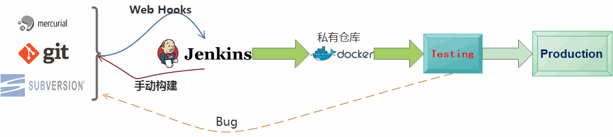

Docker
C ontinuous I ntegration & C ontinuous D elivery
C ontainerize d
What?
Docker 是一个开源项目，诞生于 2013 年初，最初是 dotCloud 公司内部的一个业余项目。它基于 Google 公司推出的 Go 语言实现。 项目后来加入了 Linux 基金会，遵从了 Apache 2.0 协议，项目代码在 GitHub 上进行维护。
Docker 自开源后受到广泛的关注和讨论，以至于 dotCloud 公司后来都改名为 Docker Inc。Redhat 已经在其 RHEL6.5 中集中支持 Docker；Google 也在其 PaaS 产品中广泛应用。
Docker 项目的目标是实现轻量级的操作系统虚拟化解决方案。 Docker 的基础是 Linux 容器（LXC）等技术。
在 LXC 的基础上 Docker 进行了进一步的封装，让用户不需要去关心容器的管理，使得操作更为简便。用户操作 Docker 的容器就像操作一个快速轻量级的虚拟机一样简单。
Why?
- 更快速的交付和部署
- 更高效的虚拟化
- 更轻松的迁移和扩展
- 更简单的管理
| 特性 | 容器 | 虚拟机 |
|---|---|---|
| 启动 | 秒级 | 分钟级 |
| 硬盘使用 | 一般为MB | 一般为GB |
| 性能 | 接近原生 | 弱于 |
| 系统支持量 | 单机支持上千个容器 | 一般几十个 |
Container vs VM


AUFS
联合文件系统（UnionFS） 是一种分层、轻量级并且高性能的文件系统，它支持对文件系统的修改作为一次提交来一层层的叠加，同时可以将不同目录挂载到同一个虚拟文件系统下(unite several directories into a single virtual filesystem)。
联合文件系统是 Docker 镜像的基础。镜像可以通过分层来进行继承，基于基础镜像（没有父镜像），可以制作各种具体的应用镜像。
另外，不同 Docker 容器就可以共享一些基础的文件系统层，同时再加上自己独有的改动层，大大提高了存储的效率。
Docker 中使用的 AUFS（AnotherUnionFS）就是一种联合文件系统。 AUFS 支持为每一个成员目录（类似 Git 的分支）设定只读（readonly）、读写（readwrite）和写出（whiteout-able）权限, 同时 AUFS 里有一个类似分层的概念, 对只读权限的分支可以逻辑上进行增量地修改(不影响只读部分的)。
Docker 目前支持的联合文件系统种类包括 AUFS, btrfs, vfs 和 DeviceMapper。
名词
- 镜像 images
- 容器 container
- 仓库 registry
常用命令
docker [run|start|stop|restart|kill|rm|pause|unpause] # 容器生命周期管理 docker [ps|inspect|top|attach|events|logs|wait|export|port] #容器操作运维 docker [commit|cp|diff] #容器rootfs命令 docker [login|pull|push|search] #镜像仓库 docker [images|rmi|tag|build|history|save|import] #本地镜像管理 docker [info|version] #其他命令
图示

Dockerfile
FROM 10.10.107.16:5000/ruby:2.2.2 RUN gem sources --remove https://rubygems.org/ && gem source -a https://ruby.taobao.org/ ENV www /www ENV OA_CORE_MODULE_PATH="/src/ciprun-oa-basic" OA_CLOUD_STORAGE_HOST='172.16.22.8' OA_CLOUD_STORAGE_PASSWORD='ciprun' RAILS_ENV='production' SECRET_KEY_BASE='49f9face71a......abaeb' RAILS_SERVE_STATIC_FILES='true' OA_DOMAIN='10.10.107.15' OA_SSO='10.10.107.15:3100' RUN mkdir /www && cd /www WORKDIR ${www} ADD ciprun-oa-basic/ /src/ciprun-oa-basic ADD zxr_sso/ ${www} RUN sed -i 's/rubygems.org/ruby.taobao.org/g' Gemfile RUN bundle install && bundle exec rake assets:precompile RAILS_ENV=production EXPOSE 3100 CMD rails s -p 3100 -b 0.0.0.0
持续集成

挑选
- kubernetes
- compose
- swarm
- mesos+marathon
要做的事
- Test ENV as a service
- Jenkins & MQ 集成
假如拥有如下技能！
会点 Linux
会用 一个编程语言(python、PHP)
会点 css js
知道 github、bitbucket
基础 生产环境搭建
Come On!
End
Thank You!
Q & A